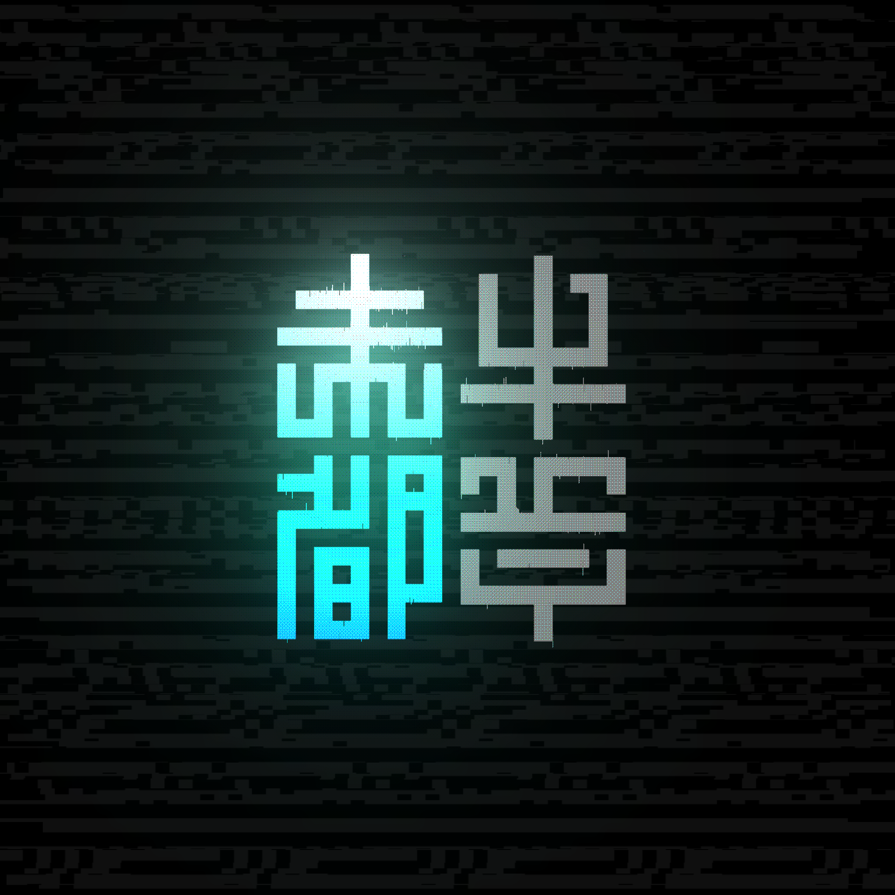
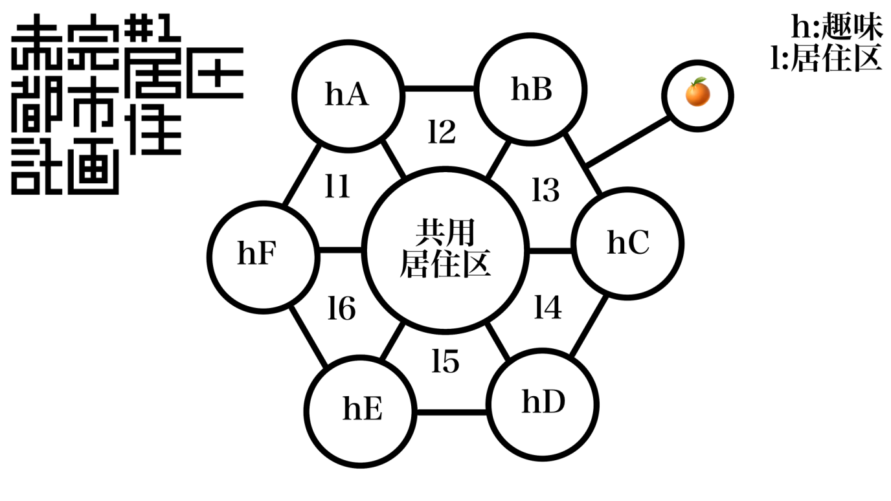

未完都市
CONCEPT_
DATA_BLOCK_01THE
CITY
新しいアイデアと
人のつながりで、
街を作る。
「未完都市(νMSCV)」は、単なるチャットサーバーではありません。チャンネル構造そのものを「都市設計」に見立てた、全く新しいコミュニティ運営モデルです。
趣味への深い探求と、住民同士の偶発的な交流。その二つのバランスを極限まで追求し、拡張性の高いシステムとして構築されています。
この都市は完成することはありません。状況やメンバーの変化に応じて、常に拡張・再構成され続ける「動的モデル」です。
CITY_PLAN_

当サーバーは、住民が「住みやすく」「話しやすく」「遊びやすい」環境を維持するため、空間を論理的に分割・接続しています。
中央: 共用居住区
都市の心臓部たる共通ロビー・公共広場です。市民権（ロール）を持つ全ユーザーがアクセス可能なメインストリートであり、重要なお知らせや全体雑談、各所への導線として機能します。
周囲: [h] 趣味チャンネル群
（例：hA, hB, hC...）共通の関心事を持つ人々が集う専門区画です。「創作」「音楽」「技術」など、特定分野の深い交流を目的とし、隣接する関連分野とは後述の居住区を通じて有機的に接続されます。
接続: [l] 居住区・動線チャンネル
（例：l1, l2, l3...）市民の実際の活動拠点であり、専門区画[h]と中央広場を結ぶ大動脈です。物理的な配置によって「交流の心理的距離感」を可視化し、自然な人の流れを生み出します。
🍊 特異領域: 副共用居住区
基本構造から意図的に隔離されたパラレルワールド。ギャグ、メタ発言、理不尽な構造、その他「通常の都市計画にそぐわない」要素の検疫・隔離区画です。くだらないネタの墓場となるか、あるいは天啓が降りる聖地となるか。